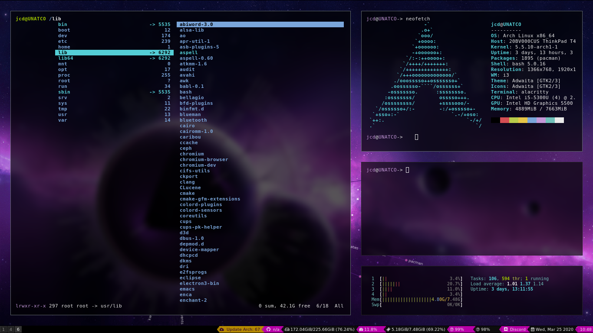
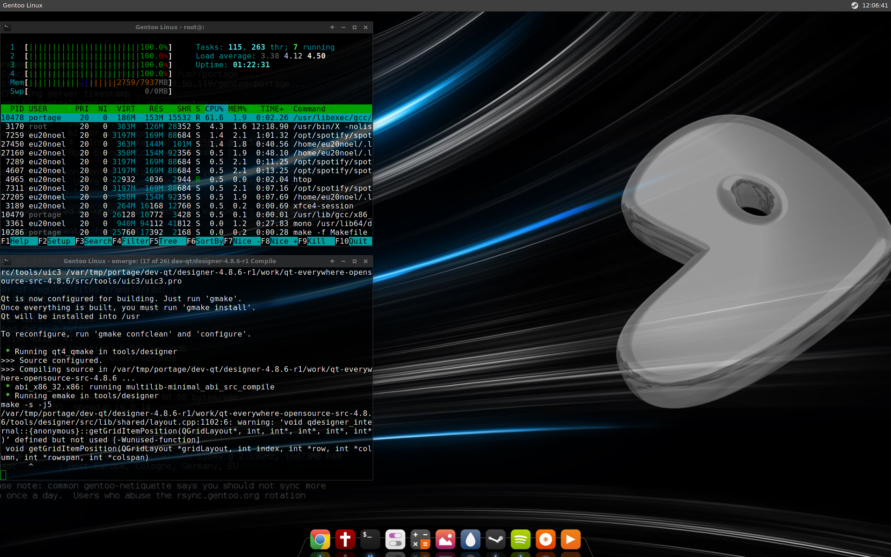
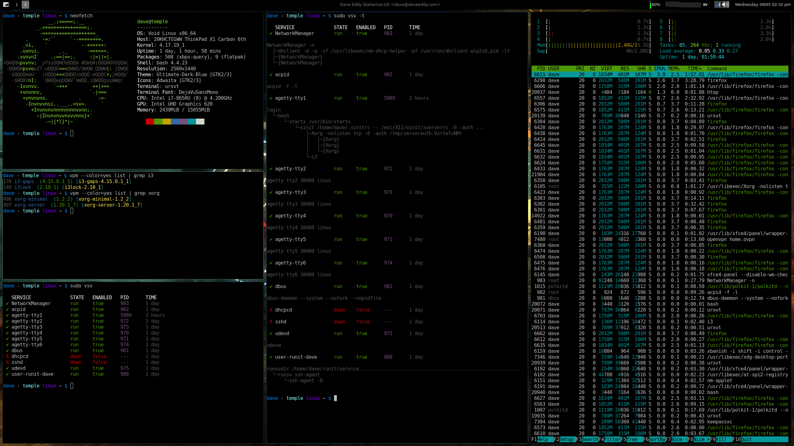
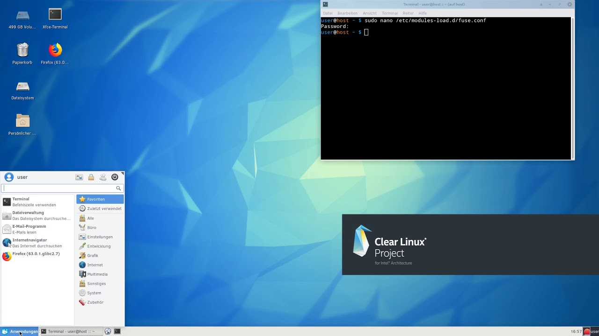

Dystrybucje dla profesjonalnych użytkowników
Arch Linux
Arch Linux – dystrybucja GNU/Linuksa stworzona przez Judda Vineta. Stawia ona sobie za cel łatwość konfiguracji i użytkowania systemu operacyjnego, a także dostępność znacznej ilości aktualnego oprogramowania, którym można w prosty i wygodny sposób zarządzać. Łatwość ta nie jest jednak osiągana przez dużą ilość graficznych konfiguratorów, a poprzez przemyślnie rozmieszczone i zaprojektowane pliki konfiguracyjne, skrypty i programy. Dlatego też Arch Linux, mimo swojej prostoty, może nie być odpowiednim systemem dla osób niemających wcześniej styczności z GNU/Linuksem ani dla tych, dla których używanie konsoli oraz edycja plików tekstowych w celu zmiany ustawień mogą sprawiać problemy.
Inspiracją dla Judda Vineta była inna, wcześniejsza dystrybucja GNU/Linuksa – CRUX. Arch jest oparty na systemie pakietów binarnych kompilowanych dla architektur i686 oraz x86_64 zarządzanych przez specjalnie do tego zadania stworzony program o nazwie pacman. Umożliwia on instalację, aktualizację oraz usuwanie pakietów. Pakiety mogą być także budowane ze źródeł przy pomocy ABS (Arch Linux Build System) – systemu podobnego do portów FreeBSD. Umożliwia on proste i szybkie budowanie pakietów i włączanie ich do systemu. Instalacja przebiega w trybie tekstowym, a użytkownik może dokonać konfiguracji systemu edytując odpowiednie pliki.
Dostępne jest wydanie dedykowane architekturze ARM, działające m.in. na platformie Raspberry Pi. Arch stanowi podstawę dla wielu dystrybucji pochodnych, m.in. Manjaro.

Gentoo Linux
Gentoo Linux – dystrybucja systemu operacyjnego GNU/Linux. Jej nazwa powstała od pingwina białobrewego, który po angielsku nazywa się Gentoo penguin. Naczelnymi założeniami tej dystrybucji są konfigurowalność, usprawnienie przenośności i optymalizacja pod kątem sprzętu użytkownika. Jest to realizowane dzięki instalacji niemal całego oprogramowania z kodu źródłowego za pomocą mechanizmu Portage.

Void
Void Linux to niezależna dystrybucja systemu Linux, ogólnego zastosowania.
System wyposażony jest w hybrydowy menadżer pakietów „XBPS”, który pozwala na instalację, aktualizację i usuwanie pakietów, jak również budowanie aplikacji z pakietów źródłowych.

Linux From Scratch
Linux From Scratch to projekt, który dostarcza użytkownikowi informacje na temat budowania, krok po kroku, własnego systemu operacyjnego opartego na jądrze Linux i pakietach źródłowych.
Clear Linux*
Clear Linux to minimalna, niezależnie rozwijana dystrybucja systemu Linux zaprojektowana przede wszystkim pod kątem wydajności i zastosowań w chmurze.
System operacyjny aktualizuje się jako całość, zamiast używać pojedynczych pakietów.

Źródła: Wikiepdia
|